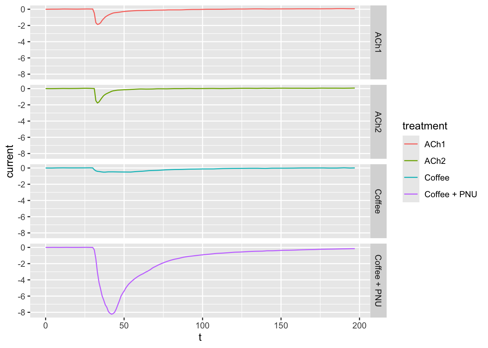
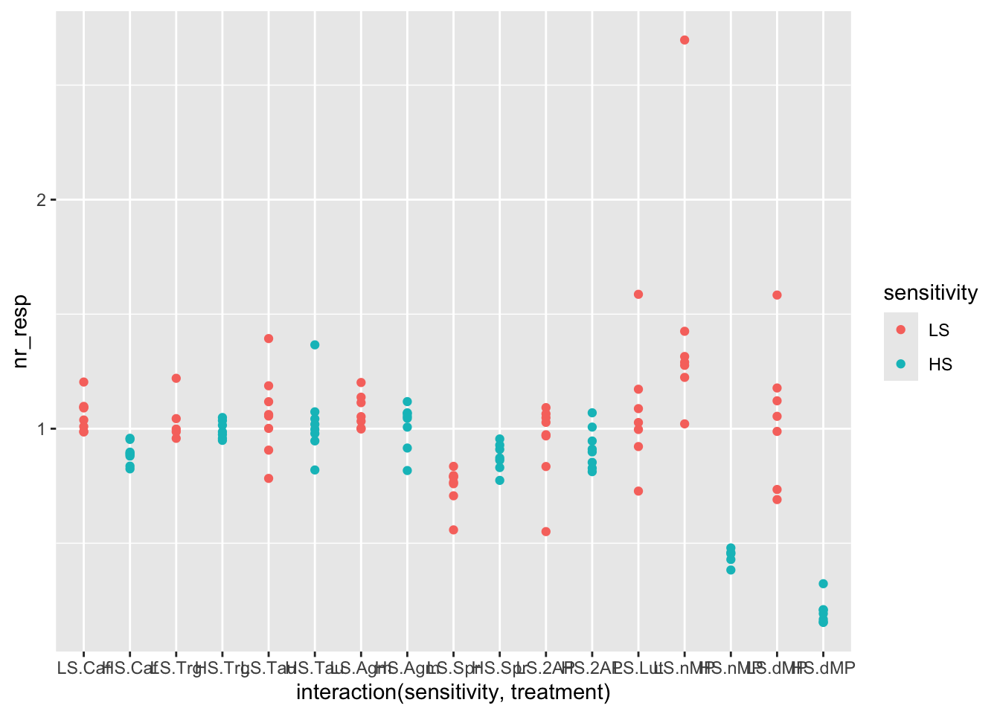
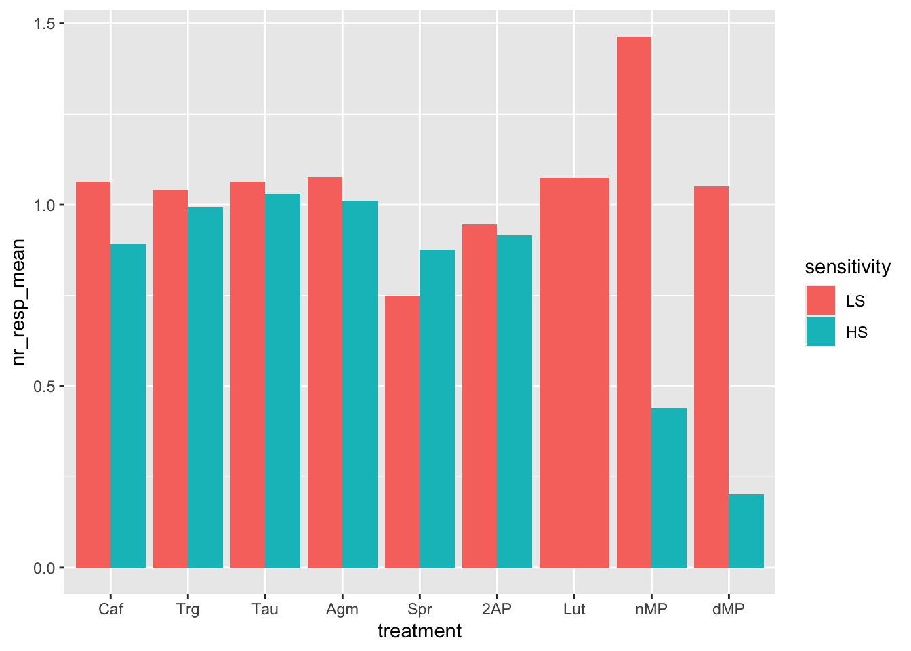
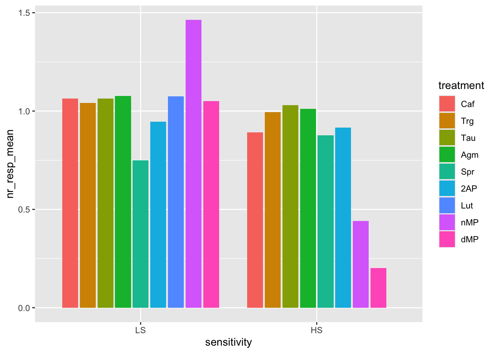

# Install the required packages from CRAN repository
# Skip this step if the packages are already installed
install.packages("tidyverse")
install.packages("patchwork")
install.packages("remotes")
# Install the package papke2022 from GitHub using the remotes package previously installed
remotes::install_github("ramiromagno/papke2022")ENCODS 2023 | R Workshop
Publication-Ready Graphs using R
Please note | This workshop is not for absolute beginners.
If you want to learn basic R, you can find my online R for Absolute Beginners hands-on tutorial here.
If you know some R and just need a step-by-step tutorial on how to install and conceptually use the R packages ggplot2 and patchwork, please start by reading the extra information found in the Introduction to ggplot2 & patchwork file before continuing with this workshop.
Fundamentals
0. Tidy data | Cleaning and formatting your data
Any data analysis pipeline starts by tidying your data, which is the process of cleaning, transforming, and reorganizing data to make it suitable for analysis and visualization.

1. Creating plots | Using ggplot2
ggplot2 is a popular package for data visualization in R. It is based on the “grammar of graphics” framework, which emphasizes the modular construction of a plot using different layers and components (ggplot2 online documentation here).
The basic syntax of ggplot2 involves three main components:
- the data,
- the aesthetics (
aes()),
- and the geometric objects (
geom()).
2. Combining plots | Using patchwork
patchwork is an R package that provides a simple way to combine multiple plots created with ggplot2 into a single panel or figure. It allows users to create complex and customized layouts of multiple plots, arranged in rows or columns, and adding labels or titles to the panel (patchwork online documentation here).
- The plots are combined and their layout is defined using the following symbols:
+(combine the plots in a square grid shape, e.g. 2x2, or 3x3);
|(place plots next to each other into equal sized grid portions);
/(place plots on top of each other).
()(group the plots into a single portion of the grid).
- Example: plot1 | (plot2 / plot3)
3. Principles of Effective Data Visualization & Common Mistakes to Avoid
Three key principles of effective data visualization are:
- Clarity | A good data visualization should be easy to understand, with clear labels, axes, and legends that explain what the data represents.
- Simplicity | Visualizations should be simple, avoiding unnecessary clutter or visual noise that can distract from the main message. Remember: “Less is more.”
- Honesty | Data visualizations should accurately represent the data being presented, avoiding misleading or deceptive representations that can distort or misrepresent the data.
In addition to these key principles, it’s important to be aware of some common mistakes to avoid when creating data visualizations:
- Distorting the data | Visualizations should accurately represent the data being presented, without distorting or misrepresenting the underlying information.
- Using inappropriate visual encoding | Choosing the wrong type of chart or visual encoding can lead to confusion or misinterpretation of the data.
- Failing to consider the audience | It’s important to consider who your audience is and what information they need to understand the data being presented.
To learn more about data visualization and ggplot2, here are some additional resources:
Setup
RStudio
- Start by creating a folder in your system where you will save the workshop materials and code developed during the course.
- Open RStudio and set your working directory to the previously created folder. You can use
setwd("path/to/directory")in the console, or use the file browser pane in RStudio to navigate to the desired folder, click the cog icon and select “Set as Working Directory”. - Write all your R code in the R script file to save it and keep the script after the workshop.
Packages
This workshop uses four R packages:
- tidyverse | A metapackage that installs most of the packages that you’re likely to use in everyday data analyses.
- patchwork | A package designed to make plot composition in R simple and powerful.
- remotes | A package that allows R package installation from remote repositories, including GitHub.
- papke2022 | A package containing the data required for this workshop, developed by Ramiro Magno, and deposited in GitHub. The data in this package was retrieved from the paper: Papke et al. 2022.
Install the packages
Load the packages
# Load the required packages
library(tidyverse)
library(patchwork)
library(papke2022)Exercises
The exercises designed for this workshop will revisit the figures from the Papke et al. 2022 paper.
Exercise1
Figure 1 | Single plot | Points and Lines
# Setting the seed for the random number generator
set.seed(42)
# Create the dataset01 object with the data of interest
dataset01 <-
# Start with the data from figure 01 A1 from the papke2022 package
fig01A1 |>
# Keep only the observations from Dark Roasted Coffee and AcetilCHoline 1 receptor
filter(coffee == "Dark Roasted Coffee",
treatment == "ACh1") |>
# Shuffle the rows (to illustrate the need for tidy data)
sample_frac()
#
##
### First plot: draw a scatter plot of time vs current
##
#
ggplot(dataset01, aes(x = t, y = current)) +
geom_point()# Points are sequentially connected by time
# so let's connect them to emphasise that aspect:
# substitute the point with the path geometry
ggplot(dataset01, aes(x = t, y = current)) +
geom_path()# Contrast with the line geometry
ggplot(dataset01, aes(x = t, y = current)) +
geom_line()# Contrast with sorting the observations in `dataset01`
# and using `geom_path()` again.
dataset01_sorted <- arrange(dataset01, t)
ggplot(dataset01_sorted, aes(x = t, y = current)) +
geom_path()
# Finally, you may have more than one geometry for the
# same data in the same plot: let's mix points and lines!
ggplot(dataset01, aes(x = t, y = current)) +
geom_point() +
geom_line()# Emphasise the points by changing their color
ggplot(dataset01, aes(x = t, y = current)) +
geom_point(col = "red") +
geom_line()# The order of the geoms does matter!
# Here we've swapped the lines with the points,
# so the points are "on top" of the line.
ggplot(dataset01, aes(x = t, y = current)) +
geom_line() +
geom_point(col = "red")Exercise2
Figure 1 | Several plots | Faceting
# `dataset02`: time vs current (several treatments)
# Note: R is case-sensitive, so watch out for typos! That string passed
# onto `coffee` needs to be spelled exactly like shown.
dataset02 <-
fig01A1 |>
filter(coffee == "Dark Roasted Coffee")
# Plot time vs current
ggplot(dataset02, aes(x = t, y = current)) +
geom_point()# Connect the dots with `geom_line()`
# Perhaps not what we expected!
ggplot(dataset02, aes(x = t, y = current)) +
geom_line()# Without telling it, ggplot2 won't know that
# there are groups of observations that belong
# together.
ggplot(dataset02, aes(x = t, y = current, group = treatment)) +
geom_line()# It would be nicer if we could distinguish the curves a little better.
# Let's use color!
ggplot(dataset02, aes(x = t, y = current, group = treatment, col = treatment)) +
geom_line()
# BTW, using `col` (color) automatically performs a grouping on the
# observations, so this simpler code would have worked just the same:
ggplot(dataset02, aes(x = t, y = current, col = treatment)) +
geom_line()# This is all fine and dandy but I'd prefer to have the curves side by side
# as in the paper.
# `facet_grid()` forms a matrix of panels defined by row and column faceting variables.
# It is most useful when you have two discrete variables, and all combinations of the variables exist in the data.
# If you have only one variable with many levels, try `facet_wrap()`.
# Use `vars()` to supply variables from the dataset.
ggplot(dataset02, aes(x = t, y = current, col = treatment)) +
geom_line() +
facet_grid(cols = vars(treatment))# As you can see the curves are presented in alphabetical order of the
# `treatment` values. To define the order of the facets you just need to
# change the `treatment` variable to a factor and set the levels in the
# desired order.
dataset03 <- dataset02
dataset03$treatment <- factor(dataset03$treatment, levels = c("ACh1", "Coffee", "ACh2", "Coffee + PNU"))
ggplot(dataset03, aes(x = t, y = current, col = treatment)) +
geom_line() +
facet_grid(cols = vars(treatment))# Now change the `cols` to `rows` to display the plots on top of each other, instead of side-by-side
ggplot(dataset02, aes(x = t, y = current, col = treatment)) +
geom_line() +
facet_grid(rows = vars(treatment))
Exercise3
Figure 3B | Boxplots and Points | Colors
dataset04 <- fig03B
# Let us draw now a plot where the x-axis is categorical!
# Note that the call to ggplot does not change, you only need
# your data to be tidy (correct variable types).
ggplot(dataset04, aes(x = treatment, y = nr_resp)) +
geom_point()# In case you don't like the points overlapping... nudge them a bit.
# Play with the `width` parameter of the geom_jitter() function.
ggplot(dataset04, aes(x = treatment, y = nr_resp)) +
geom_jitter(width = 0.2)# Adding colors to make the plot less dull!
ggplot(dataset04, aes(x = treatment, y = nr_resp, col = treatment)) +
geom_jitter(width = 0.2)# Let us make the colors the same as the ones from the paper.
# I got them for you right here:
fig03_colors <- c("white", "red", "blue", "green", "purple")
ggplot(dataset04, aes(x = treatment, y = nr_resp, col = treatment)) +
geom_jitter(width = 0.1) +
scale_color_manual(values = fig03_colors)# Add a boxplot to appreciate the distribution and the quartiles.
# Learn about transparency (`alpha`) and change point shape and size.
# For more info about point shapes: https://ggplot2.tidyverse.org/articles/ggplot2-specs.html#point
#
ggplot(dataset04, aes(x = treatment, y = nr_resp, fill = treatment)) +
geom_boxplot(alpha = 0.2) +
geom_jitter(width = 0.1, shape = 21, size = 2.5) +
scale_fill_manual(values = fig03_colors)# Let us customise the axes
ggplot(dataset04, aes(x = treatment, y = nr_resp, fill = treatment)) +
geom_boxplot(alpha = 0.2) +
geom_jitter(width = 0.1, shape = 21, size = 2.5) +
scale_fill_manual(values = fig03_colors) +
ylab("Normalized response") +
xlab("Treatment")# Let us remove the legend because it is redundant with the x-axis labels
ggplot(dataset04, aes(x = treatment, y = nr_resp, fill = treatment)) +
geom_boxplot(alpha = 0.2, show.legend = FALSE) +
geom_jitter(width = 0.1, shape = 21, size = 2.5, show.legend = FALSE) +
scale_fill_manual(values = fig03_colors) +
ylab("Normalized response") +
xlab("Treatment") +
ggtitle("Plot 04")# You can save a plot as an R object into a variable.
# If you type the name of the variable and hit enter, RStudio will show the
# plot. Saving plots into variables can also be useful to combine several plots.
# Save the plot into variable `p04`:
p04 <- ggplot(dataset04, aes(x = treatment, y = nr_resp, fill = treatment)) +
geom_boxplot(alpha = 0.2, show.legend = FALSE) +
geom_jitter(width = 0.1, shape = 21, size = 2.5, show.legend = FALSE) +
scale_fill_manual(values = fig03_colors) +
ylab("Normalized response") +
xlab("Treatment") +
ggtitle("Plot 04")
# Show the plot saved in p04
p04Exercise4
Figure 3C, 3D, 3E | Combining plots with patchwork
dataset05 <- fig03C
dataset06 <- fig03D
dataset07 <- fig03E
# Let us create the other plots of Figure 3 (C, D and E).
# Save them each in their own variable.
# Note that the code is the same from exercise 3, changing only
# the dataset used.
p05 <-
ggplot(dataset05, aes(x = treatment, y = nr_resp, fill = treatment)) +
geom_boxplot(alpha = 0.2, show.legend = FALSE) +
geom_jitter(width = 0.1, shape = 21, size = 2.5, show.legend = FALSE) +
scale_fill_manual(values = fig03_colors) +
ylab("Normalized response") +
xlab("Treatment") +
ggtitle("Plot 05")
p06 <-
ggplot(dataset06, aes(x = treatment, y = nr_resp, fill = treatment)) +
geom_boxplot(alpha = 0.2, show.legend = FALSE) +
geom_jitter(width = 0.1, shape = 21, size = 2.5, show.legend = FALSE) +
scale_fill_manual(values = fig03_colors) +
ylab("Normalized response") +
xlab("Treatment") +
ggtitle("Plot 06")
p07 <-
ggplot(dataset07, aes(x = treatment, y = nr_resp, fill = treatment)) +
geom_boxplot(alpha = 0.2, show.legend = FALSE) +
geom_jitter(width = 0.1, shape = 21, size = 2.5, show.legend = FALSE) +
scale_fill_manual(values = fig03_colors) +
ylab("Normalized response") +
xlab("Treatment") +
ggtitle("Plot 07")
# Combine the four plots into a single figure of four panels!
(p04 + p05) / (p06 + p07)# The R package patchwork allows you to use the three operators `+`, `|` and `/`
# to create different layouts. Try it out!
p04 / p05 / p06 / p07(p04 + p05) | (p06)(p04 + p05) | (p06 / p07)# Add a main figure title
((p04 + p05) | (p06 / p07)) + plot_annotation("Figure 3")# Add tags to each panel
((p04 + p05) | (p06 / p07)) + plot_annotation("Figure 3", tag_levels = "A")# Just like individual plots, you can also save the whole figure into a variable.
figure03 <- ((p04 + p05) | (p06 / p07)) + plot_annotation("Figure 3", tag_levels = "A")Exercise5
Figure 6 | Interactions, Points and Bar plots
# Look at the data
fig06# A tibble: 123 × 4
treatment sensitivity nr_resp signif
<fct> <fct> <dbl> <chr>
1 Caf LS 1.09 ""
2 Caf LS 0.988 ""
3 Caf LS 1.10 ""
4 Caf LS 1.09 ""
5 Caf LS 1.01 ""
6 Caf LS 0.986 ""
7 Caf LS 1.04 ""
8 Caf LS 1.20 ""
9 Caf HS 0.898 ""
10 Caf HS 0.837 ""
# ℹ 113 more rows# Plot the normalized response per treatment as points
ggplot(fig06, aes(x = treatment, y = nr_resp)) +
geom_point()# Color the points per sensitivity (High or Low)
ggplot(fig06, aes(x = treatment, y = nr_resp, col = sensitivity)) +
geom_point()# The plot becomes clearer if you separate the points per combination of sensitivity and treatment
# This is easily done by adding an interaction to the x variable
ggplot(fig06, aes(x = interaction(sensitivity, treatment), y = nr_resp, col = sensitivity)) +
geom_point()
# Add jitter to the points to avoid overlapping and rotate the x labels
ggplot(fig06, aes(x = interaction(sensitivity, treatment), y = nr_resp, col = sensitivity)) +
geom_jitter(width = 0.2) +
theme(axis.text.x = element_text(angle = 90))# Another interesting visualization for these data would be a bar plot showing the mean response values.
# For this, we must first calculate the mean of the normalized responses per combination of sensitivity and treatment (i.e. group)
fig06_averages <-
fig06 |>
group_by(sensitivity, treatment) |>
summarise(nr_resp_mean = mean(nr_resp), .groups = "drop")
# Start by plotting the points with the mean values
ggplot(fig06_averages, aes(x = treatment, y = nr_resp_mean)) +
geom_point()# Add color by sensitivity
ggplot(fig06_averages, aes(x = treatment, y = nr_resp_mean, col = sensitivity)) +
geom_point()Barplots
# Try a bar plot using the `geom_bar()` function.
# Note the change of aesthetics from `col` to `fill`
ggplot(fig06_averages, aes(x = treatment, y = nr_resp_mean, fill = sensitivity)) +
geom_bar(stat = "identity", position = "stack") # Now, change the bars from stacked to side-by-side.
# By default bars take up the whole available width, note how wide the "Lut" bar is!
ggplot(fig06_averages, aes(x = treatment, y = nr_resp_mean, fill = sensitivity)) +
geom_bar(stat = "identity", position="dodge")
# We can fix the width of the "Lut" bar by changing the position parameter to
# something more fancy. More details are available at the help page of
# `geom_bar()`.
ggplot(fig06_averages, aes(x = treatment, y = nr_resp_mean, fill = sensitivity)) +
geom_bar(stat = "identity", position = position_dodge2(preserve = "single"))# Now, instead of coloring the bars per sensitivity, try to color the bars per treatment. Is it more informative? Sensitivity is now missing, and the x-axis and the color are redundant (same variable).
ggplot(fig06_averages, aes(x = treatment, y = nr_resp_mean, fill = treatment)) +
geom_bar(stat = "identity", position = position_dodge2(preserve = "single"))# Now, let's try a different color for each individual bar by defining the `fill` aesthetic with the interaction of `sensitivity` and `treatment`.
# Recall that interaction means combination.
ggplot(fig06_averages, aes(x = treatment, y = nr_resp_mean, fill = interaction(sensitivity, treatment))) +
geom_bar(stat = "identity", position = position_dodge2(preserve = "single"))# Now let's flip the coordinates to facilitate reading the names of the treatments
ggplot(fig06_averages, aes(x = treatment, y = nr_resp_mean, fill = interaction(sensitivity, treatment))) +
geom_bar(stat = "identity", position = position_dodge2(preserve = "single")) +
coord_flip()# What happens if you exchange the treatment and sensitivity aesthetics?
ggplot(fig06_averages, aes(x = sensitivity, y = nr_resp_mean, fill = treatment)) +
geom_bar(stat = "identity", position = "stack")# Now try the dodge bars (grouped bars)
ggplot(fig06_averages, aes(x = sensitivity, y = nr_resp_mean, fill = treatment)) +
geom_bar(stat = "identity", position = position_dodge2(preserve = "single"))
Combining plots in the same figure to choose the most relevant one
# Save the plots in variables
# Stacked bars
ggplot(fig06_averages, aes(x = treatment, y = nr_resp_mean, fill = sensitivity)) +
geom_bar(stat = "identity", position = "stack") -> p08
ggplot(fig06_averages, aes(x = sensitivity, y = nr_resp_mean, fill = treatment)) +
geom_bar(stat = "identity", position = "stack") -> p09
# Dodge bars
ggplot(fig06_averages, aes(x = treatment, y = nr_resp_mean, fill = sensitivity)) +
geom_bar(stat = "identity", position = position_dodge2(preserve = "single")) -> p10
ggplot(fig06_averages, aes(x = sensitivity, y = nr_resp_mean, fill = treatment)) +
geom_bar(stat = "identity", position = position_dodge2(preserve = "single")) -> p11
# Points and flipped coordinates
ggplot(fig06, aes(x = interaction(sensitivity, treatment), y = nr_resp, col = sensitivity)) +
geom_jitter(width = 0.2) +
theme(axis.text.x = element_text(angle = 90)) -> p12
ggplot(fig06_averages, aes(x = treatment, y = nr_resp_mean, fill = interaction(sensitivity, treatment))) +
geom_bar(stat = "identity", position = position_dodge2(preserve = "single")) +
coord_flip() -> p13
# Combine the plots with patchwork and compare the various alternative plots to visualize the same data
((p08 | p10 | p12) / (p09 | p11 | p13))Exercise6
Figure 8 | Themes, Customization & Saving plots
ggplot2 is very flexible, providing a wide range of graphical elements and aesthetic mappings, which allows you to customize and fine-tune your plots to best convey your data, making the plots arbitrarily complex, and highly customized to look exactly how one desires.
However, there are other advantages of using ggplot2:
- Consistency: ggplot2 uses a consistent grammar of graphics, which allows you to create a wide range of visualizations using a consistent set of principles;
- Reproducibility: ggplot2 produces fully reproducible plots;
- Integration: ggplot2 is part of the wider tidyverse ecosystem, which means that it works seamlessly with other tidyverse packages using a consistent set of tools;
- Community: ggplot2 has a large and active community of users and developers, which means that there are plenty of resources available to help you learn and use the package effectively.
Example of a complex customized plot
# Define auxiliary variables
# Colors
bath_colors <- c(
"LS 100 μM n-MP" = "#51aff5",
"LS 300 μM n-MP" = "#1f6bff",
"LS 30 μM n-MP" = "#4fefff",
"HS 30 μM n-MP" = "#f0bed9",
"HS 100 μM n-MP" = "#d880d4",
"HS 300 μM n-MP" = "#fe0d6c"
)
# Labels
nMP <- c("ACh", "ACh", rep("ACh + n-MP", 7), "ACh", "ACh", "ACh")
# Create the plot to reproduce the plot from the paper
fig08_plot <-
fig08 |>
mutate(shape = if_else(grepl("^LS", bath), 21, 22)) |>
ggplot(aes(x = x_i, y = mean, group = bath)) +
# Add lines
geom_line(linewidth = 0.25) +
# Add error bars by specifying the ymin and ymax
geom_errorbar(aes(ymin = mean - sd, ymax = mean + sd),
width = 0.1, linewidth = 0.25) +
# Add points with different shapes
# See: https://ggplot2.tidyverse.org/articles/ggplot2-specs.html#point
geom_point(aes(fill = bath, shape = shape), size = 3, show.legend = FALSE) +
scale_shape_identity() +
# Set the same colors as in the paper
scale_fill_manual(values = bath_colors) +
# Use geom_text() to annotate with asterisks (to indicate significance)
geom_text(aes(y = mean + sd, label = signif), size = 5, nudge_y = 0.01) +
# Set x-axis tick marks and change labels
scale_x_continuous(breaks = 1:12, labels = nMP) +
# Set y-axis tick marks
scale_y_continuous(breaks = seq(0, 1.8, 0.2)) +
# Change y-axis title
ylab("Normalized response") +
# Add plot title and subtitle
ggtitle("ACh responses with bath application of n-MP", sub = "n-MP") +
# Use a simple non-gray background theme
theme_light() +
theme(
# Make x-axis labels bold and rotate them 90 degrees
axis.text.x = element_text(face = "bold", angle = 90),
# Remove x-axis title
axis.title.x = element_blank(),
# Center plot title
plot.title = element_text(hjust = 0.5),
# Center plot subtitle
plot.subtitle = element_text(hjust = 0.5)
)
# Show the plot! Note that it is very laborious, and the plot is not that special!
# There are simpler and easier ways to show the same data
fig08_plotSaving plots to disk
# Save the plot to disk as PDF
# The file will be saved in your current working directory (check with `getwd()`)
ggsave(filename = "fig08_plot_20x10.pdf", plot = fig08_plot, width = 20, height = 10, units = "cm")
# Save the plot to disk as PNG
ggsave(filename = "fig08_plot_20x10.png", plot = fig08_plot, width = 20, height = 10, units = "cm")
# Note that line thickness and font size do not change as you change
# the plot dimensions, so if you make the plot larger, the lines and the text
# will look smaller.
ggsave(filename = "fig08_plot_40x20.pdf", plot = fig08_plot, width = 40, height = 20, units = "cm")
ggsave(filename = "fig08_plot_40x20.png", plot = fig08_plot, width = 40, height = 20, units = "cm")